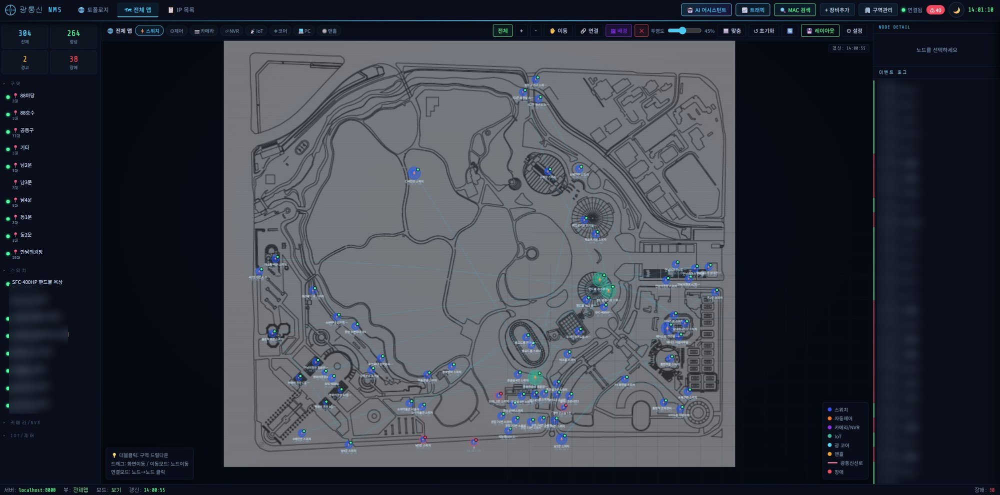
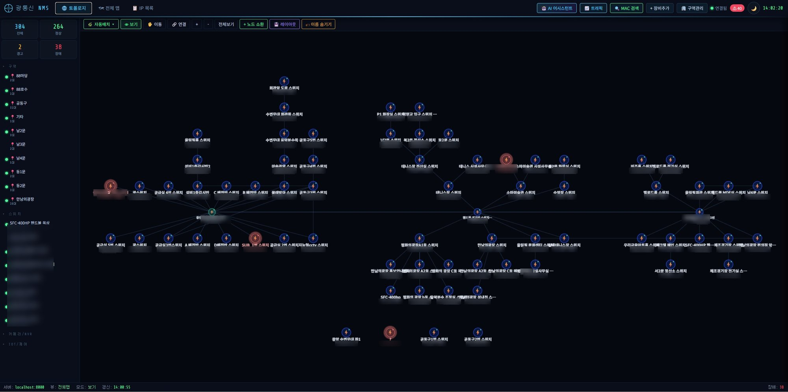

인프라 · 전기
광통신망 통합관리(NMS) 프로그램 구축
CCTV, 자동제어, 스위치 등 공원 곳곳의 광통신망 장비를 한 화면에서 관리하는 시스템을 자체 개발했습니다. 그동안 담당자의 기억과 문서에 의존하던 장비 위치와 연결 구조를 시각화해, 현재 장비 304대의 위치와 상태를 실시간으로 확인할 수 있습니다.




- 공원 도면 위에서 장비 위치 확인
- 올림픽공원 도면 위에 스위치·제어기·카메라·NVR 등 장비를 실제 위치대로 배치했습니다. 구역별로 장비 수와 정상·경고·장애 상태를 바로 볼 수 있습니다.
- 토폴로지로 연결 구조 파악
- 코어 스위치에서 현장 스위치까지 연결 구조를 계층별로 그대로 보여줍니다. 한 구간이 끊기면 영향받는 하위 장비를 즉시 식별할 수 있습니다.
- 실시간 장애 감시와 이벤트 기록
- 장비 상태를 정상·경고·장애로 나눠 표시하며, 장애 발생과 복구 시각은 이벤트 로그에 자동으로 누적 기록됩니다.
- SNMP로 포트·연결 정보 자동 수집
- 스위치에서 포트 상태와 MAC 주소를 자동으로 수집합니다. 어느 포트에 어떤 장비가 연결돼 있는지 분석해 장애가 나면 원인 구간을 빠르게 좁힙니다.
- IP 대역 스캔과 일괄 등록
- IP 대역을 스캔해 응답하는 장비를 찾고, MAC 주소를 자동 조회해 일괄 등록함으로써 수작업 대장 정리 부담을 크게 줄였습니다.
- 여러 PC에서 같은 정보 공유
- 장비 정보와 배치 위치를 서버에 저장해 어느 관리 PC에서 접속해도 동일한 최신 화면과 토폴로지를 공유합니다.
- 상용 솔루션 없이 AI로 자체 구현
- 생성형 AI를 활용해 상용 NMS 도입 비용 없이 시스템을 직접 구축했습니다. 소스코드를 보유하고 있어 현장 요구에 맞춰 기능을 즉시 확장·개선할 수 있습니다.
- 향후 계획
- 포트 정보가 아직 수집되지 않은 스위치까지 수집 범위를 넓히고, 누적 장애 이력을 AI로 분석해 반복 고장 구간을 사전에 찾아낼 예정입니다.